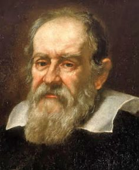
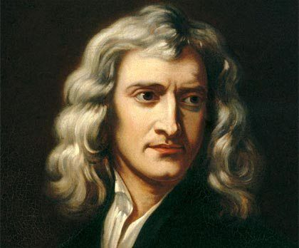
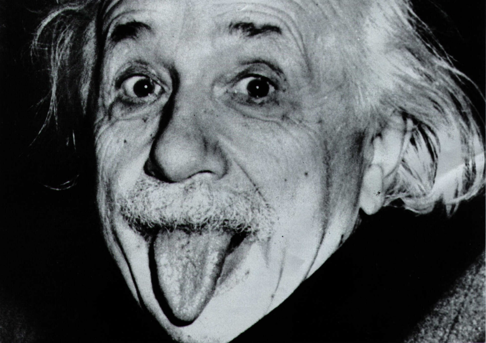
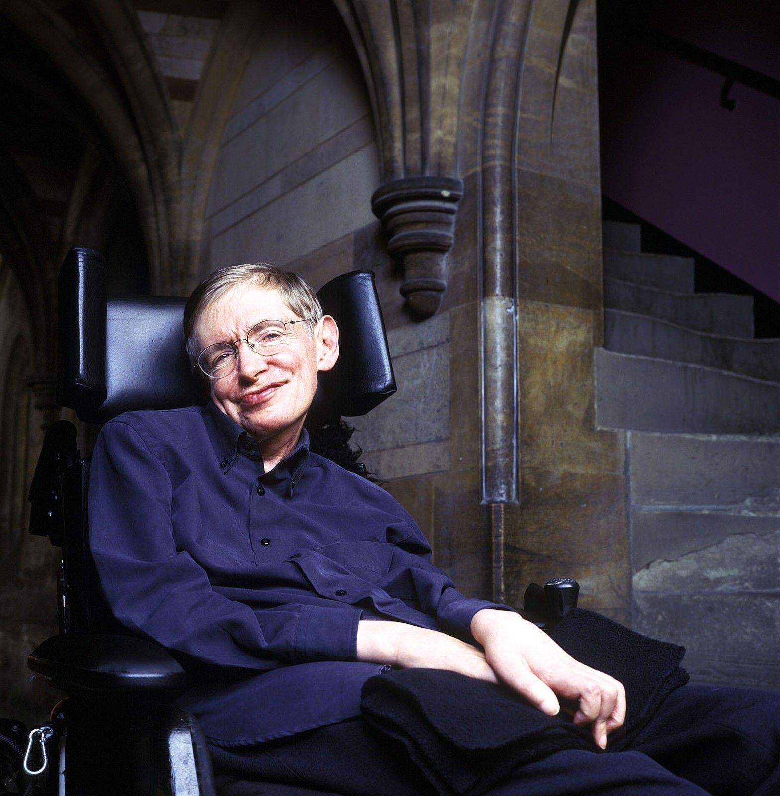

Os Sonhadores!
O universo e suas descobertas
Este post mostra o avanço na ciência, proporcionada por gênios das suas épocas e relacionando com cada visão de mundo. No entanto, as perguntas nunca cessam e o que vira agora?
Apresentado no site vice.com a Teoria de Jhonn Wheller dos anos de 1955, aproveitada também, na pesquisa do professor Steve Carlip da Universidade da Califórnia, abre novos ares para a imaginação.
Quando crianças, passamos a nos perguntar de praticamente tudo que observamos, e diante disso, a física nunca parou de nos maravilharmos com sua invenções, ideias e conceitos. De movimento dos corpos, força da gravidade, curvatura do espaço-tempo, buracos negros, anomalias do mundo quântico, dentre outros.
A teoria da espuma quântica de Wheller, vem para abrir nossa mente, sobre as pequenas bolhas temporais e sua deformação rugosa. Bem, agora você tem um bom motivo para chegar no final deste blog, venha conhecer esse parâmetro controverso, nerds e curiosos!
Galileu Galilei
Galileu Galilei (1564-1642) se tornou um brilhante cientista, por sempre nutrir um forte interesse em fenômenos astronômicos e cálculos matemáticos. E por conta disso, desenvolveu na mecânica, descobertas devido a experimentos com o pêndulo, luneta, e analisou crateras e montanhas na Lua, descobriu as quatro maiores luas de Júpiter e comprovou que a Via Láctea é composta por infinitas estrelas. O movimento dos corpos celestes serviu principalmente de base a um novo gênio, após a sua morte.
Isaac Newton
Isaac Newton (1643-1727) foi um cientista inglês, sendo mais conhecido como o pai da lei da gravidade e o criador das famosas Leis de Newton, considerado uma das mentes mais brilhantes de todos os tempos. Pelo fato de ter observado uma maça cair, enquanto estudava na sala de aula da faculdade, a resposta por traz de todo o movimento dos corpos, assim como o sistema solar no seu posicionamento celeste, a força da gravidade é o que atrai e reprime qualquer corpo, referente a Lei da Gravitação Universal e seus conceitos, deste modo
Albert Einstein
Albert Einstein (1879-1955) a partir de suas teorias foi possível compreender o universo em grande escala e entender a interação entre espaço, tempo e gravidade.
O que se conhecia como gravidade antes, era uma mera ilusão, assim descrito pelo próprio gênio, numa palestra: “Passado, presente, futuro é uma simples ilusão, o que é tempo e o que é espaço? Se fazendo reconhecer a curvatura do espaço-tempo em um universo quadridimensional.
A formulação da famosa equação, E=mc² é uma prova da energia contida, resultado da massa multiplicada pela velocidade da luz ao quadrado. Determinada pela relação da transformação da massa de um objeto em energia. Superando assim as barreiras físicas de tempo e espaço. Apenas nesse caso, acabando assim, com sua constante cosmólica de expanção do universo e a unificação que não deu tão certo, afinal. Mesmo assim, ficara para história.
Stephen Hawking
Stephen Hawking (1942-2018) foi um físico inglês que mesmo paralisado pela ELA (esclerose lateral amiotrófica)- doença degenerativa, perdendo o movimento dos ossos, se tornou celebridade por produzir teorias relacionadas, a mecânica quântica, termodinâmica, gravidade, dentro da física moderna.
Seus estudos sobre o Big Bang em parceria com Penrose,tratam sobre o passado do universo que se encontrava num estado de densidade infinita, se usando de base a Relatividade, descrevendo um ponto no qual a própria teoria se despedaça, chamado pelo gênio como singularidade.
E propôs também, que buracos negros emitem partículas virtuais, conhecida como Radiação Hawking, sendo a casos diferentes, além de evaporar e desaparecer(temperatura). E com tantas teorias, sabemos que o universo é infinito e certamente uma força além da compreensão humana, teria gerado as leis da ciência.
Teoria da Espuma Quântica de Wheller, o que é isso?
Após a Relatividade Geral, muitos afirmam que uma unificação da Gravidade e Mecânica Quântica seria um novo começo.
Pois bem, a Energia Estrôncio proposto por Wheller na sua Teoria, se refere a um olhar subatômico sobre o universo "rugoso e espumoso", lembrando até uma bacia de cereais com suas bolinhas de chocolate flutuando ao seu redor, não é mesmo?
Comparações a parte, isso significa que o universo conhecido como um tecido deformado pelas três dimensões de espaço e tempo conectados como unidade, atraindo objetos devido aos corpos com grandes massas e energia, são simplesmente um estado desorganizado de espumas com mini-universos, se contraindo e expandindo devido a essa energia extra do Big bang, voltando ao estado que normalmente conhecemos, liso e cheio de astros. No entanto, esse fato só serviria para nos forçar a mais perguntas.
De certo modo, isso se liga muito bem a Incerteza de Weiseberg, no mundo quântico e seus efeitos estranhos sem tempo definido. Concluindo, essa nova maneira de enxergar o universo, abre caminho também, para as particulas virtuais de Hawking, buracos negros, matéria escura e sua energia, além da Teoria de tudo. Canso, até aqui né? o post serviu para divulgar o trabalho científico que não tem o seu valor reconhecido, mas muda nossas vidas todos os dias sem percebermos.